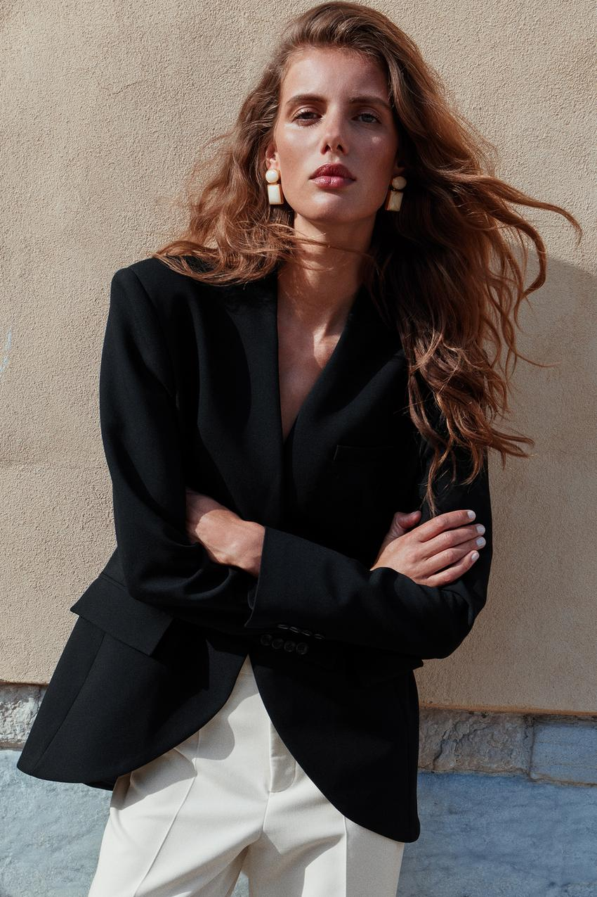
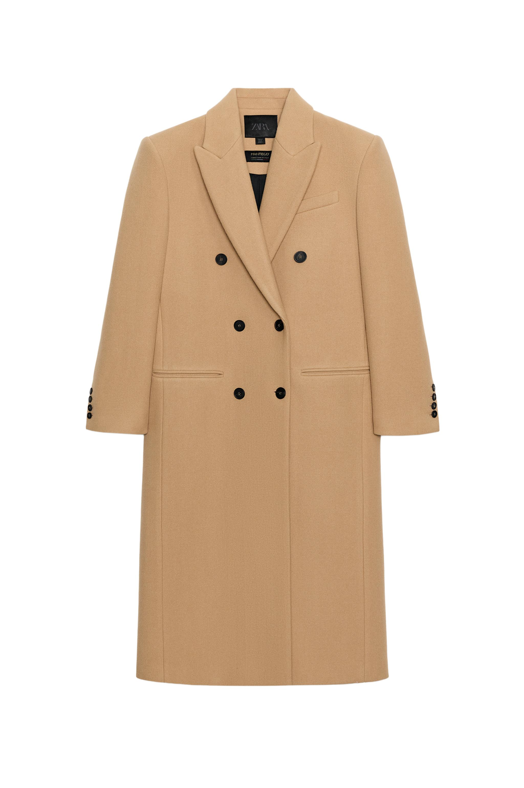

本文选取的 ZARA 女装造型，通过清楚的肩腰线条、集中的配色和醒目的配饰，呈现出利落而讲究的都市感。
黑色西装用宽肩与收腰建立轮廓，黑白搭配通过色块形成对比，浅色耳饰则把注意力引向面部。这些细节共同影响着人物的整体形象，也让相近的服装呈现出不同气质。
ZARA 的系列跨度较大，不能用一种风格概括。其官方品牌介绍强调对顾客偏好与趋势的关注，以及创意上的灵活性。ZARA 官方品牌介绍 本文选择其中剪裁鲜明、配色相对集中的女装形象，分析它们怎样呈现都市感，以及正式、自然与精致之间的不同关系。
廓形建立人物的第一印象
廓形指服装穿在身体上形成的整体外轮廓。观看一套造型时，人们往往先注意肩部、腰部与衣身的宽窄长短，再逐渐看见纽扣、口袋和面料纹理。

图片来源：ZARA 官方造型图。
这套黑色西装的视觉重点，首先来自肩部与腰部的比例。
肩线平直，并明显向两侧延伸；腰部向内收束，使上半身形成清楚的宽窄变化。V 形领口在两肩之间向下展开，为横向的肩部增加了一条纵向线索。
这些线条共同强化了造型的力量感。即使颜色集中、装饰不多，服装仍有很强的存在感。
大面积黑色进一步突出轮廓。上下装之间没有明显的色块分割，视线能够沿着肩部、领口与腰部连续移动。浅色耳饰则在面部附近形成小面积亮点，避免注意始终停留在衣服上。
收拢的头发也参与了这一处理。颈部与肩线得到充分展示，服装的几何形状更加清楚。这里所呈现的利落与秩序感，来自剪裁、搭配和人物呈现方式的共同作用。
这类造型也说明，“简洁”可以具有鲜明的表现力。关键在于少量元素之间是否存在清楚的比例关系。
相近的服装，可以呈现不同的状态
同样使用黑色西装，改变下装、发型和配饰，整体气质就会发生变化。

图片来源：ZARA 官方造型图。
第二幅图仍然保留了明确的翻领和腰部，但没有延续第一套造型中大面积深色的连续性。
白色下装带来明显的明暗分区，让画面更明快。卷发在肩部形成曲线，与西装的直线并置。手臂弯曲后，袖子和衣身出现自然褶皱，人物的外轮廓也随姿态发生变化。
这套造型保留了西装的整齐，同时呈现出较强的活动感。它提供了一种值得关注的关系：清楚的服装结构，可以与自然的身体状态同时存在。
因此，判断一套造型是否松弛，不能只看衣服是否宽大。服装与身体之间的余量、搭配中的正式程度，以及姿态和妆发，都在影响最终感受。
两幅图放在一起，也能看出品牌形象的形成过程。相似的单品经过不同组合，可以分别强调力量、明快或自然。造型的作用，在于决定这些特征中哪一部分更突出。
材质让颜色之外的层次显现出来
颜色接近的衣服，仍然可能具有丰富的层次。区别往往来自表面光泽、纹理、厚薄，以及衣服下垂和起褶的方式。
表面平整的西装料，容易呈现清楚的折线与剪裁；细密针织随身体形成较柔和的变化；带有毛感的呢料让边缘显得厚实；缎面则会随着褶皱出现连续的亮暗变化。
这些差别，使材质能够参与气质表达。
例如，挺括外套与柔软内搭组合，可以保留外部轮廓，同时减弱贴近身体部分的生硬感。大面积不太反光的面料，配上一小块光面皮革，则会出现局部的光泽重点。
面料的视觉效果，也需要与纤维成分区分。羊毛可以加工成较平整的西装织物，也可以呈现明显毛感。Woolmark 对精纺与粗纺加工的介绍，说明了同类纤维经过不同加工后形成的外观差异。羊毛加工与织物外观
缎面涉及织物组织与表面效果，不能直接等同于真丝。CottonWorks 的说明指出，缎纹中较长的浮线有助于形成平滑、光泽明显的表面。缎纹织物的结构与外观
所以，研究服装质感，需要同时观察成分、结构与外观。照片能够呈现其中一部分；手感、舒适度与耐穿程度，则需要通过实物另外判断。
色彩与结构共同决定大衣的气质

图片来源：ZARA 官方商品图。
这件驼色大衣，能够进一步说明颜色与结构之间的关系。
驼色使它比纯黑造型显得柔和，但肩部形状、较长的翻领与双排扣，仍然保留着明确的秩序。黑色纽扣有规律地分布在衣身中间，成为浅色表面上的小面积对比。
衣服的气质因此不能只归因于颜色。同样是驼色，换成自然垂落的肩部、柔软衣身或不同的衣长，效果就可能改变。
搭配也会继续调整这种关系。以这件大衣为例，搭配米白色内搭，可以让颜色较缓和地衔接；搭配深色内搭，明暗区别会更加清楚；加入牛仔面料，又会增加日常感。这些是基于单品特征展开的搭配推演，最终仍需观察上身效果。
配色的重点，也由此从“使用几种颜色”转向颜色的面积与位置。
少量白色出现在领口附近，容易强调面部周围；同样的白色用于下装，则会改变整个人的上下明暗分布。颜色数量没有增加，整体效果仍然会发生明显变化。
鞋履与配饰调整造型的重心
鞋履会影响服装下方的轮廓，也会改变整套搭配的分量。
光面皮鞋的反光较集中，通常容易成为深色下装附近的一处细节。鞋头的长短与宽窄、鞋底的厚薄，又会与裤脚或裙摆共同形成比例。
同一套服装换上较轻薄的鞋，脚部的体积会减小；换成厚底短靴，下方的重量感则会增加。因此，鞋子的选择需要放进整套造型中判断。
首饰也承担类似作用，但更接近面部、颈部或双手。
第二幅图中的耳饰，由浅色几何饰片与金色边缘构成。浅色部分与白色下装形成联系，金色边缘增加局部光泽。耳饰的形状清楚，周围又没有堆叠同样醒目的装饰，因而能够成为稳定的观看重点。
这说明配饰的效果，取决于它与附近元素的关系。
耳饰需要与发型、领口和肩部形状一起看；项链需要考虑领口留下的空间；手镯与腕表则会受到袖口位置的影响。饰物的大小、亮度与出现位置，都在决定目光会在哪里停留。
精致感可以来自一件经过选择的饰物，也可以来自鞋包、纽扣与衣服之间细微的呼应。增加装饰之前，先判断造型中已有的重点，往往更容易形成完整效果。
快时尚属性与视觉表现，应分别理解
ZARA 通常被归入快时尚。IESE 对这一模式的研究介绍，强调快速响应需求与持续调整商品组合，以缩短从设计到销售的周期。IESE 对 ZARA 快时尚模式的分析
快时尚描述经营与供应方式；服装的都市感、力量感或柔和感，则属于具体的视觉表现。两者可以同时成立。
研究 ZARA，可以关注它怎样选择和组合当季服装元素，又怎样通过摄影、妆发和姿态强化这些特点。对单品质量、舒适度与适用场景的判断，则仍需落到具体衣服上。
从这些案例中，可以看到一条比较清楚的造型思路：先让整体轮廓成立，再利用颜色、材质和配饰建立区别与重点。
这种观察方法并不限于某一品牌或某一性别。它能够帮助读者把“喜欢一种气质”转化为具体判断：喜欢的是肩腰比例、颜色衔接、表面光泽，还是整套造型中各个部分的配合。
留言
由 Disqus 提供。